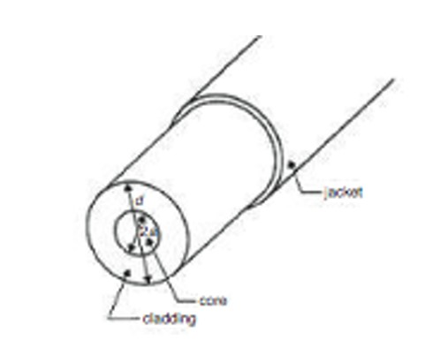
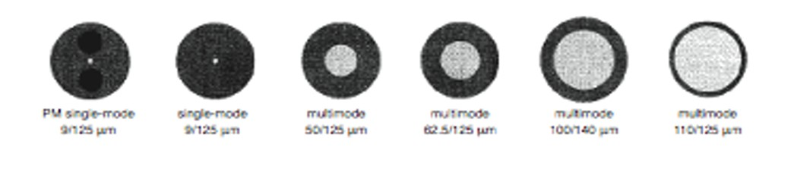
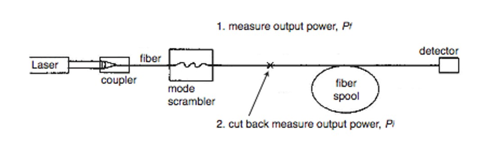
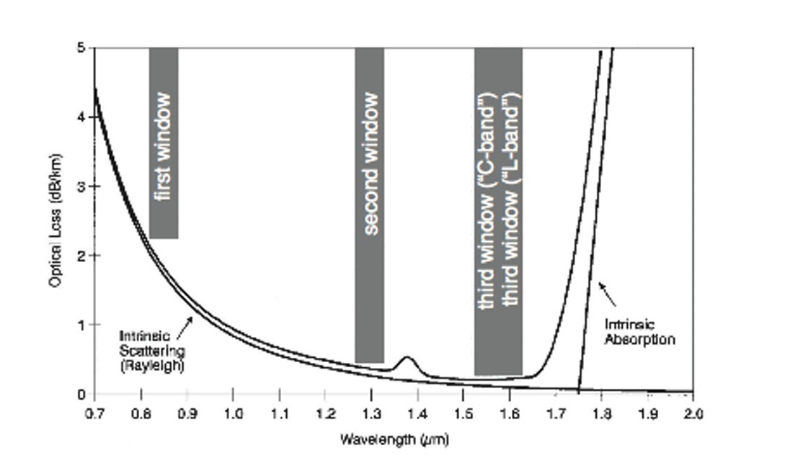

Theory
Construction
 An optical fiber consists of a core with a refractive index n core and diameter 2aand a cladding, with a refractive index ncl and diameter d.
Typical core diameters range from 4 to 8 µm for single-mode fibers, from 50 to l00 µm
for multimode fibers used for communications, and from 200 to l000 µm for
large-core fibers used in power transmission applications.
Communications-grade fibers will have d in the range of 125 – 140 µm, with some
single-mode fibers as small as 80 µm. In high-quality communications fibers,
both the core and the cladding are made of silica glass,
with small amounts of impurities added to the core
to raise the index of refraction slightly.
The transition of the optical parameters from the core to the cladding can be discontinuous (stepindex fiber)
or smooth (graded-index fiber).
There are also lower-quality fibers available which have a glass core surrounded by a plastic cladding,
as well as some all-plastic fibers. The latter have very high attenuation coefficients and
are used only in applications requiring short lengths of fiber.
The optical fiber will generally be surrounded by a protective jacket.
This jacket may be made from a plastic and have an outside diameter of 500 – l000 µm.
However, the jacket may also be a very thin layer of varnish or acrylate material.

Numerical Aperture
The numerical aperture (NA) is a measure of how much light can be collected by an optical system,whether it is an optical fiber, a microscope objective lens or a photographic lens.
It is the product of the
refractive index of the incident medium and the sine of the maximum ray angle
Attenuation
Attenuation (loss) is a logarithmic relationship between the optical output power and the optical input power in afiber optical system.It is a measure of the decay of signal strength, or loss of light power, that occurs
as light pulses propagate through the length of the fiber.
In principle, the fiber attenuation is the easiest of all fiber measurements to make.
The method which generally used is called the “cutback method”.

All that is required is to launch power from a source into a long length of fiber, measure the power at the far
end of the fiber using a detector with a linear response, and then, after cutting off
a length of the fiber, measure the power transmitted
by the shorter length.
The reason for leaving a short length of fiber at the input end of the system is to make sure that the loss that is measured
is due solely to the loss of the fiber and not to loss which occurs when the light source is coupled to the fiber.



Numerical Aperture =


Fractional Index Change
Critical Angle
sin-1( )
Attenuation
L(dB) = -10 ( log ( ))